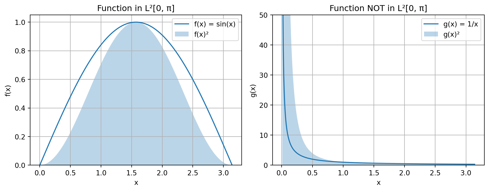

Code
```{python}
#| code-fold: true
#| label: fig-l2-examples
#| fig-cap: 'Left: sin(x) is in L²[0, π]. Right: 1/x is NOT in L²[0, π] as its square diverges near x=0.'
import numpy as np
import matplotlib.pyplot as plt
# Domain
x1 = np.linspace(0.01, np.pi, 400) # Avoid x=0 for 1/x plot
x2 = np.linspace(0, np.pi, 400)
# Functions
f1 = np.sin(x2) # In L2[0, pi]
f2 = 1 / x1 # Not in L2[0, pi] because integral of 1/x^2 diverges at 0
# Plotting
fig, axs = plt.subplots(1, 2, figsize=(10, 4))
axs[0].plot(x2, f1, label='f(x) = sin(x)')
axs[0].fill_between(x2, f1**2, alpha=0.3, label='f(x)²')
axs[0].set_title('Function in L²[0, π]')
axs[0].set_xlabel('x')
axs[0].set_ylabel('f(x)')
axs[0].legend()
axs[0].grid(True)
axs[0].set_ylim(bottom=0)
axs[1].plot(x1, f2, label='g(x) = 1/x')
axs[1].fill_between(x1, f2**2, alpha=0.3, label='g(x)²')
axs[1].set_title('Function NOT in L²[0, π]')
axs[1].set_xlabel('x')
axs[1].set_ylabel('g(x)')
axs[1].legend()
axs[1].grid(True)
axs[1].set_ylim(0, 50) # Limit y-axis to show divergence
plt.tight_layout()
plt.show()
```